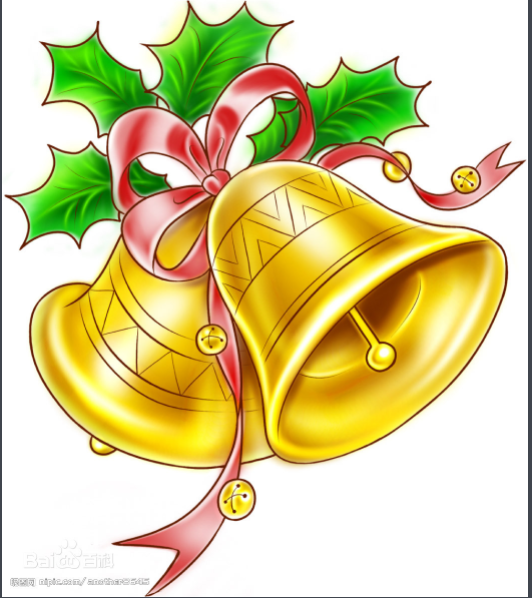

圣诞节（Christmas）又称耶诞节，译名为“基督弥撒”，它源自古罗马人迎接新年的农神节，与基督教本无关系。在基督教盛行罗马帝国后，教廷随波逐流地将这种民俗节日纳入基督教体系，同时以庆祝耶稣的降生。但在圣诞节这天不是耶稣的生辰，因为《圣经》未有记载耶稣具体生于哪天，同样没提到过有此种节日，是基督教吸收了古罗马神话的结果。
大部分的天主教教堂都会先在12月24日的平安夜，亦即12月25日凌晨举行子夜弥撒，而一些基督教会则会举行报佳音，然后在12月25日庆祝圣诞节；基督教的另一大分支——东正教的圣诞节庆则在每年的1月7日。
圣诞节也是西方世界以及其他很多地区的公共假日，例如：在亚洲的中国香港和澳门地区、马来西亚、新加坡。
据说耶稣是因着圣灵成孕，由圣母玛利亚所生的。神便派遣使者加伯列在梦中晓谕约瑟，叫他不要因为玛利亚未婚怀孕而不要她，反而要与她成亲，把那孩子起名为“耶稣”，意思是要他把百姓从罪恶中救出来。

当玛利亚快要临盆的时候，罗马政府下了命令，全部人民到伯利恒务必申报户籍。约瑟和玛利亚只好遵命。他们到达伯利恒时，天色已昏，无奈两人未能找到旅馆渡宿，只有一个马棚可以暂住。就在这时，耶稣要出生了。于是玛利亚唯有在马槽上，生下耶稣。后人为纪念耶稣的诞生，便定十二月二十五为圣诞节，年年望弥撒，纪念耶稣的出世。
圣诞卡（圣诞卡片）在美国和欧洲很流行，许多家庭随贺卡带上年度家庭合照或家庭新闻，新闻一般包括家庭成员在过去一年的优点特长等内容。圣诞节这天，指出天下一家世界大同的理想，只有以和平与仁爱的言行达成。寄赠圣诞卡，除表示庆贺圣诞的喜乐外，就是向亲友祝福，以表怀念之情。尤其对在孤寂中的亲友，更是亲切的关怀和安慰。
最早以前是一对红色的大袜子，大小不拘。因为圣诞袜是要用来装礼物的，所以是小朋友最喜欢的东西，晚上他们会将自己的袜子挂在床边，等待第二天早上收礼。
2012年，在全球经济不景气的情况下，全球的圣诞经济并不乐观。虽然较平常确有不小幅度的升温，但远远低于历史水平。尤其是类似希腊这样陷入债务危机的国家，经济本身并没有复苏，购物的人们只能转转无奈离去。英国、加拿大、新加坡、美国等国由于经济好转，在商家的大力促销下圣诞经济快速回升。
更多内容请往百度